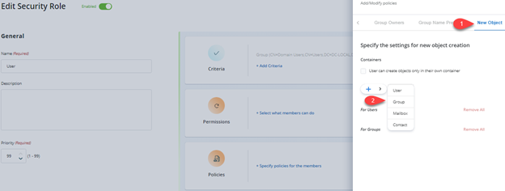
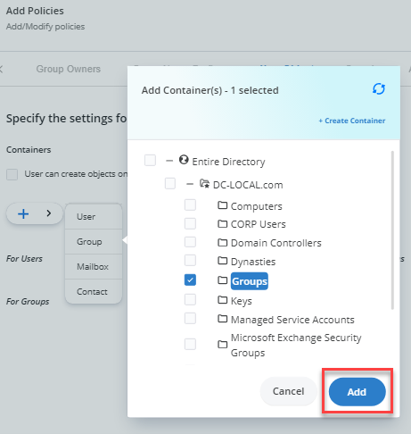

Applies To:
GroupID 11
Business Requirement:
Using the GroupID portal, users can create groups in any OU in the directory. Is there a way to limit users to create groups in a specific OU?
Solution:
In GroupID, you can apply policies to security roles, so that role members can use GroupID in keeping with the policy restrictions.
GroupID’s New Object policy enables you to restrict role members to create new groups in a specific OU only.
Steps:
-
In the GroupID Admin Center portal, click the Identity Stores tab.
-
On the Identity Stores tab, click on the Triple Dot button and then click on the Edit button to open its properties.
-
On the Security Roles tab, select the security role you would like to apply the New Object policy to (for example, User).
-
On the Policies tab, click New Object in the left pane.
-
Select Groups and click Add.
-
On the Select Container dialog box, select the container in which role members can create groups (this will be the default OU when creating groups).
The selected OU appears below the Groups option.


-
Click OK.
-
Click Update Security Role and then Save.
Now when members of the security role try to create groups, they will be created in the default OU that you specified in the New Object policy.